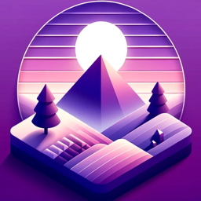
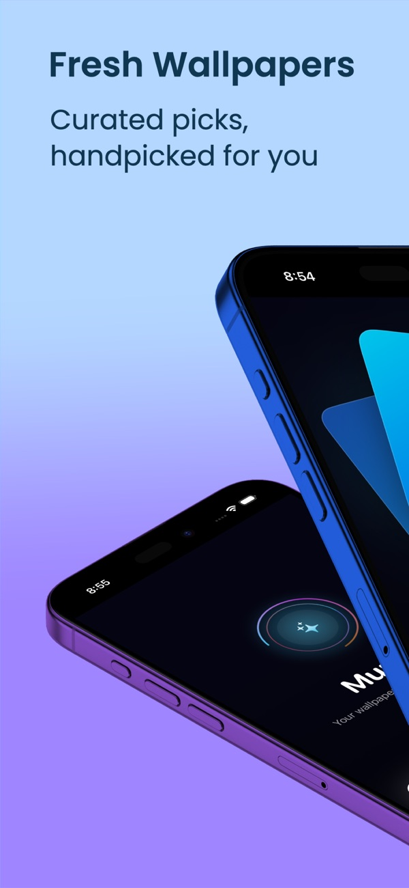
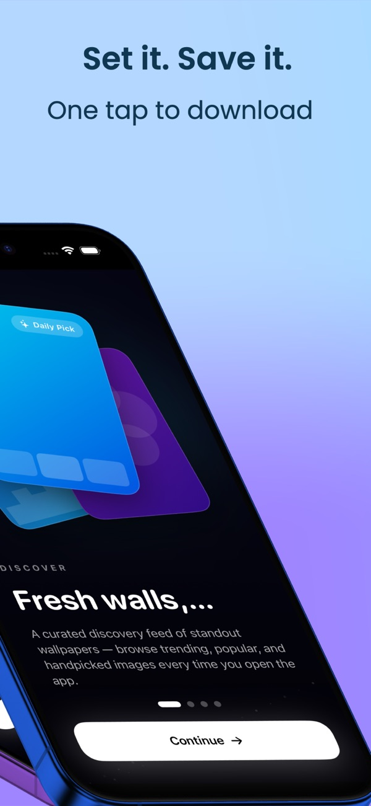
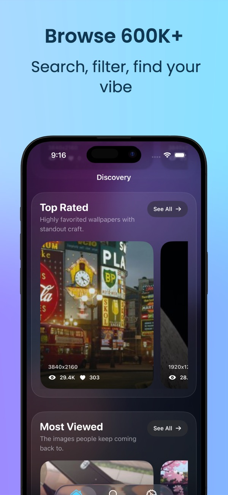
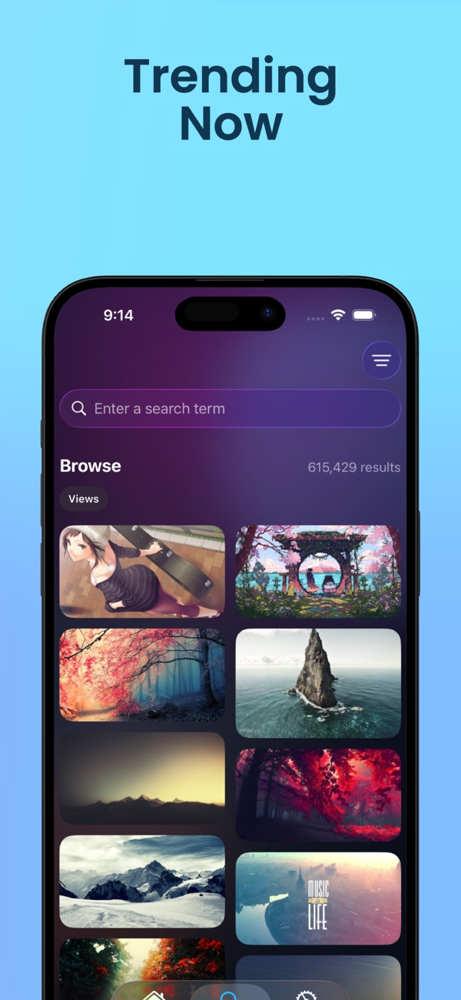
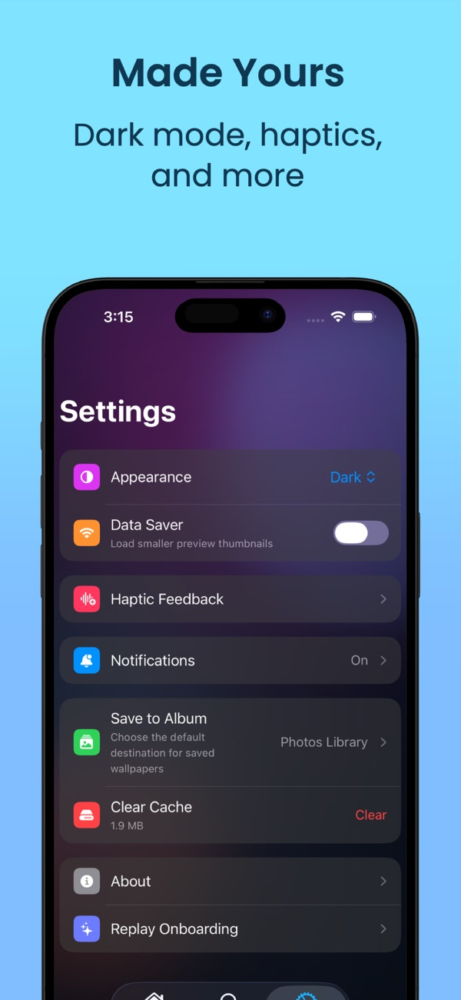

Muros
An iPhone wallpaper app with hand-curated collections that refresh every week.
- Role
- Solo: design, iOS, backend integration, release
- Platform
- iOS, SwiftUI, Swift 6
- Status
- Live on the App Store
Screens





What it does
Most wallpaper apps are an endless scroll of whatever was uploaded last. Muros goes the other way: collections are picked by hand and refreshed weekly, so there's always something new that's worth looking at.
You can browse categories like landscapes and anime, search with filters, save favourites straight to your photo library, and choose which new collections you get notified about.
How it's built
Modern SwiftUI and concurrency
The app is SwiftUI end to end, using the @Observable framework for state and
structured concurrency (async/await, TaskGroup) for loading
collections in parallel.
Subscriptions with StoreKit 2
A full StoreKit 2 setup covers monthly, yearly and lifetime plans, with free-tier limits, trial periods and transaction verification.
Architecture
MVVM with a feature-first module structure. Search history is stored with SwiftData and credentials live in the Keychain. Swift Testing contract tests cover the backend API surface, so a server change that would break the app fails a test first.
Analytics and release
TelemetryDeck tracks more than 23 privacy-friendly event signals. Releases are automated with
Fastlane lanes for TestFlight and the App Store, and GitHub Actions runs
xcodebuild test on every push to main.